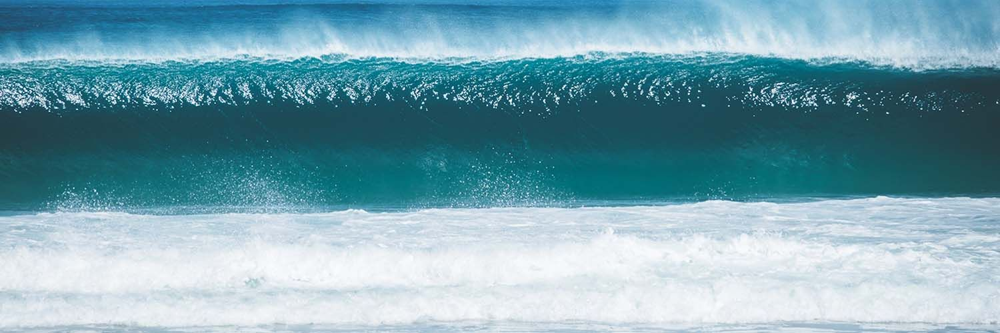
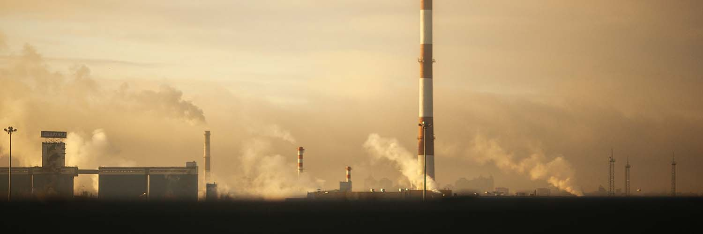
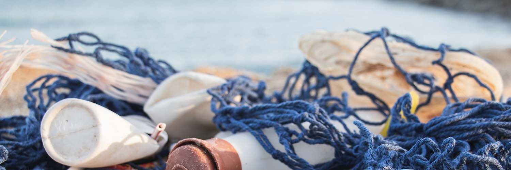
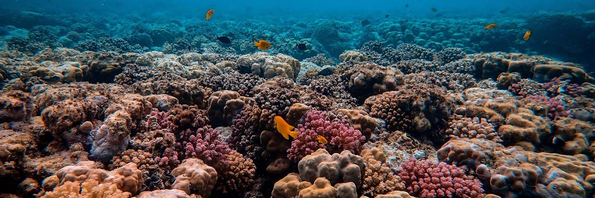
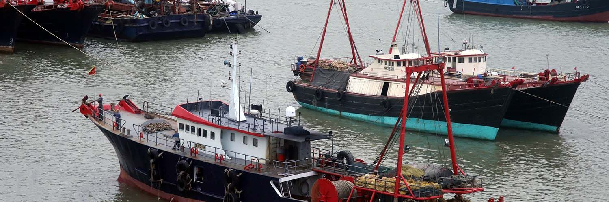

La vita sott’acqua: perché va preservata?
9 comportamenti che puoi seguire anche tu.

Aver cura dell’oceano non è importante solo per la vita sottomarina, ma lo è anche per la nostra sopravvivenza. Ecco quindi i motivi per prendersene cura, e dei suggerimenti su cosa puoi fare anche tu nella vita di tutti i giorni.
Indice
- 1. Perché è importante la vita sott’acqua?
- 1.1 La produzione di ossigeno
- 1.2 Il clima della Terra
- 1.3 L’assorbimento di CO2
- 2. Cosa mette in pericolo la vita sott’acqua?
- 2.1 Plastica negli oceani
- 2.2 Acidificazione delle acque
- 2.3 Pesca intensiva
- 3. 9 comportamenti che puoi seguire per salvaguardare l’oceano.
1. Perché è importante la vita sott'acqua?
Se anche tu come me ti sei mai chiesto per quale motivo la vita sott’acqua sia importante per la nostra sopravvivenza, o cosa puoi fare nel tuo piccolo per preservarla, allora stai leggendo l’articolo giusto. Se mi concederai un po’ del tuo tempo, ti spiegherò quale sia l’importanza degli oceani, cosa li mette in pericolo, e in che modo anche tu puoi impegnarti per preservarlo.
Infatti, oltre ad aver ispirato centinaia di poesie, racconti e leggende, mari e oceani svolgono un ruolo importantissimo per la sopravvivenza del nostro pianeta, di cui ne ricoprono più del 70%. Non a caso viene anche chiamato Pianeta Blu.
Cercherò allora di spiegarti con parole semplici, alcuni degli aspetti che rendono gli oceani e la vita sott’acqua così indispensabili per noi essere umani, tanto da avergli dedicato lo scorso 8 giugno 2020 una giornata mondiale.
1.1 La produzione di ossigeno
A differenza di come ci è stato insegnato a scuola, la percentuale maggiore di ossigeno presente nella nostra atmosfera non è da attribuire al polmone verde della Terra, vale a dire la foresta pluviale amazzonica (che ad ogni modo ne produce circa il 6%) ma al cosiddetto polmone blu, di cui fanno parte invece mari e oceani.
Non c’è da prendersela con gli insegnanti tuttavia, perché solamente negli ultimi anni è stato possibile dimostrare questa capacità delle acque oceaniche di produrre ossigeno. Nelle zone d’acqua più in superficie, dove arriva facilmente la luce del Sole, vive il fitoplancton, un insieme di microrganismi vegetali che come le piante, producono attraverso la fotosintesi dal 50 al 70% dell’ossigeno mondiale. Un gran bel lavoro per degli esserini così piccoli.
Puoi notare come già da questo primo punto è facilmente intuibile come la nostra sopravvivenza sia strettamente legata all’oceano, e perché sia importante preservarlo oggi per noi, e per il futuro delle prossime generazioni.
1.2 Il clima della terra
Mari e oceani si comportano come dei veri e proprio serbatoi: riescono infatti ad assorbire e trattenere il calore ricevuto dai raggi solari, molto meglio di come riesca a fare l’aria. Il calore assorbito viene poi disperso in tutto il globo attraverso il nastro trasportatore, ossia l’insieme delle correnti oceaniche generate dall’azione del vento combinata con altri fattori tra cui la temperatura e la salinità dell’acqua.
In cosa sarebbe diverso il clima del nostro pianeta se non ci fossero le correnti oceaniche? È presto detto: il calore prodotto dal Sole si concentrerebbe nella fascia equatoriale del globo (questo a causa dell’inclinazione dell’asse terrestre) e di conseguenza le acque comprese in quella zona bollirebbero, mentre ghiaccerebbero in prossimità dei poli, e i paesi del nord Europa avrebbero temperature decisamente più rigide durante i mesi invernali.
1.3 L'assorbimento di CO2
Ti sei mai chiesto dove vada a finire l’anidride carbonica prodotta dalle industrie o generata dagli scarichi delle nostre automobili? Oltre che ad essere dispersa nell’atmosfera, buona parte va a finire negli oceani. Il fitoplancton che ho citato poco fa infatti, riesce ad assorbire l’anidride carbonica e a trasformarla in componenti nutritivi utili alla catena alimentare marina. Ad oggi si stima che gli oceani assorbano circa il 25% delle emissioni totali.
Può sembrare una cosa positiva, e difatti lo è in parte, perché grazie a questo lavoro si riducono le percentuali dei cosiddetti gas a effetto serra presenti nell’atmosfera. Tuttavia l’incremento delle attività umane ha contribuito in maniera non indifferente alla produzione di CO2, e l’oceano rappresenta una vittima diretta del fenomeno. Questa sorta di “lavoro sporco” infatti, implica un aumento dell’acidità delle acque, di cui ti parlerò tra poco.
2. Cosa mette in pericolo la vita sott'acqua?
Nel settembre del 2015, i governi dei 193 paesi membri dell’ONU hanno firmato un programma d’azione a sostegno delle persone e del pianeta, chiamato Agenda 2030 per lo Sviluppo Sostenibile. Attraverso 17 obiettivi, i Paesi danno il loro impegno per la realizzazione di un mondo senza distinzioni tra paesi ricchi e poveri, e rispettoso nei confronti della natura. Se sei interessato a conoscere tutti i 17 punti dell’agenda, ti rimando alla sezione apposita nel sito dell’ONU.
L’Obiettivo 14 in particolare, riguarda proprio l’impegno nel proteggere e utilizzare in maniera sostenibile le risorse marine e oceaniche. La costante e progressiva trascuratezza da parte dell’uomo mette in pericolo l’oceano, causando cambiamenti nella composizione chimica delle sue acque e contribuendo alla scomparsa di molte specie marine.
Quali sono le principali problematiche a cui va incontro l’oceano?
2.1 Plastica negli oceani
In un articolo della fondazione Ellen McArthur del 2016 è stato affermato che entro il 2050 la percentuale in peso della plastica supererà di gran lunga quella dei pesci che vi abitano. Si stima infatti che nelle acque oceaniche siano presenti circa 150 milioni di tonnellate di plastica, e a pagarne le conseguenze sono moltissime specie di animali marini come pesci, tartarughe e altri mammiferi che ingeriscono frammenti di plastica o restano impigliati e strangolati nelle reti da pesca abbandonate sui fondali.
Avrai inoltre sentito parlare delle isole di plastica, delle vere e proprie discariche galleggianti, trasportate dalle correnti oceaniche per tutto il Pacifico. Ad oggi se ne contano 7, di cui una presente anche nel nostro mar Mediterraneo. La più estesa si trova nel nord del Pacifico, e viene soprannominata Great Pacific Garbage Patch, formatasi già a partire dagli anni 80, e da cui sono state già smantellate circa 103 tonnellate di plastica.
2.2 Acidificazione delle acque
La capacità del fitoplancton di assorbire l’anidride carbonica presente nell’atmosfera viene messa a dura prova dall’aumento incontrollato delle emissioni. Michael Oppenheimer, professore di geoscienze presso l’università di Princeton afferma:
Se continueremo a immettere anidride carbonica nell’atmosfera, le conseguenze per l’umanità saranno devastanti.
Abbiamo davvero poco tempo per salvare gli oceani!
Le acque assorbono troppa CO2, e si ha come conseguenza la produzione di sostanze acidificanti che riducono la produzione di alcuni minerali importanti per la sopravvivenza degli organismi marini. Un esempio è quello dello sbiancamento dei coralli.
I coralli vivono in simbiosi con alcuni tipi di alghe che, attraverso la fotosintesi, gli assicurano le sostanze nutritive di cui hanno bisogno. La presenza di queste alghe però, viene messa a rischio a causa dell’inquinamento, dell’acidità delle acque e dell’aumento delle temperature. Di conseguenza il corallo resta a corto di nutrimento e perde il suo colore originale. Perdere uno spettacolo della natura come quello della grande barriera corallina australiana, è un lusso che non ci possiamo permettere.
2.3 Pesca intensiva
L’overfishing, o semplicemente sovrappesca, consiste nello sfruttamento eccessivo delle risorse ittiche. Ogni anno infatti, vengono pescate dal mare tra le 90 e le 100 milioni di tonnellate di pesce. Secondo alcuni dati, negli ultimi 50 anni, il numero di pescherecci che solcano le acque è più che raddoppiato. I mari al contrario diventano sempre più vuoti, e nel giro di pochi decenni arriveremo ad esaurirne le scorte di pesce e a causare la scomparsa di determinate specie.
La causa di questo fenomeno è la grossa richiesta da parte del mercato di determinate specie ittiche su cui si concentrano i pescatori, negando a quelle stesse specie il tempo necessario per riprodursi. Bisogna inoltre considerare le modalità con cui vengono riempite le reti.
A questo proposito voglio invitarti a prendere coscienza di cosa spesso accade sulle navi da pesca in mare. In un filmato girato sotto copertura da Animal Equality su un peschereccio nel Mediterraneo, viene mostrato l’atroce destino a cui vanno incontro i pesci una volta strappati dal loro ambiente naturale: le reti a strascico intrappolano qualsiasi tipo di creatura marina sul fondale, noncuranti della presenza di eventuali specie protette.
Una volta che le reti sono tirate a bordo, lo spettacolo che si presenta è ai limiti dell’umano: pesci agonizzanti che si contorcono per la mancanza di ossigeno. Le specie che saranno vendute al mercato vengono trafitte da uncini, decapitate o eviscerate mentre sono ancora vive. Tutto il resto viene rigettato in mare come spazzatura, ormai privo di vita.
Secondo alcuni dati, il numero di vegani e vegetariani in Italia ha subito un significativo aumento nell’ultimo anno, passando dal 7,1% nel 2019 all’8,9% nel 2020. Alla domanda sul perché si sia presa la decisione di cambiare le proprie abitudini alimentari, gli italiani affermano che oltre alla propria salute, hanno a cuore il rispetto nei confronti degli animali.
3. 9 consigli da seguire per salvaguardare l'oceano
Attraverso l’Obiettivo 14, l’ONU si impegna a salvaguardare le acque oceaniche e la vita sott’acqua, affrontando e risolvendo differenti problematiche tra cui quelle che ti ho illustrato poco fa. Ma cosa potresti fare tu nel tuo piccolo per salvaguardare l’oceano nella vita di tutti i giorni? Ecco dei comportamenti che puoi seguire:
- Riduci il consumo di plastica, preferendo l’utilizzo di contenitori in vetro oppure di carta.
- Segui scrupolosamente la raccolta differenziata al fine di favorire il riciclo.
- Diminuisci il consumo di pesce aiutando a ridurre la pesca intensiva, oppure affidati ad allevamenti sostenibili.
- Scegli di muoverti in bici o con mezzi pubblici per di ridurre le emissioni di CO2.
- Se sei un fumatore, non disperdere i mozziconi di sigaretta nell’ambiente. I composti chimici in essi presenti sono nocivi alla fauna marina.
- Tieni pulite le spiagge, organizzando dei gruppi per la raccolta dei rifiuti abbandonati.
- Diventa un consumatore informato per imparare a capire se ciò che acquisti possa in qualche modo essere nocivo per gli oceani.
- Se hai un animale domestico assicurati che il suo cibo non abbia conseguenze negative per l’ecosistema marino, come ad esempio alcuni cibi per gatti.
- Utilizza creme solari non inquinanti quando sei in spiaggia. Se ti trovi in uno stabilimento, non utilizzare saponi nelle docce.
Come ultima cosa, ci tengo a parlarti di 4Ocean. Si tratta di un’organizzazione no profit, formata da pescatori e volontari che si impegnano nella raccolta di rifiuti in mare e di quelli abbandonati sulle spiagge.
Le campagne di pulizia vengono finanziate grazie al ricavato ottenuto dalla vendita di braccialetti realizzati con il vetro e la plastica recuperati dagli oceani. Ciascun bracciale è composto da uno spago colorato su cui sono inserite delle perle in vetro trasparente.
Ogni braccialetto acquistato contribuisce alla rimozione di 1kg di spazzatura in acqua e sulle coste. Ti lascio il link per accedere alla sezione Shop dell’organizzazione. Con circa 20$ puoi dare anche tu un grande contributo alla causa.